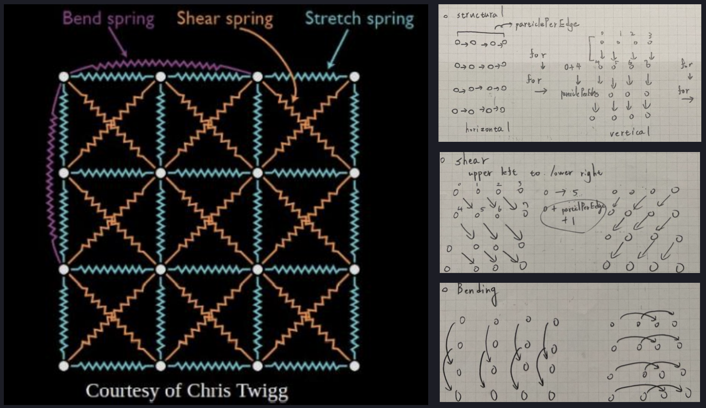
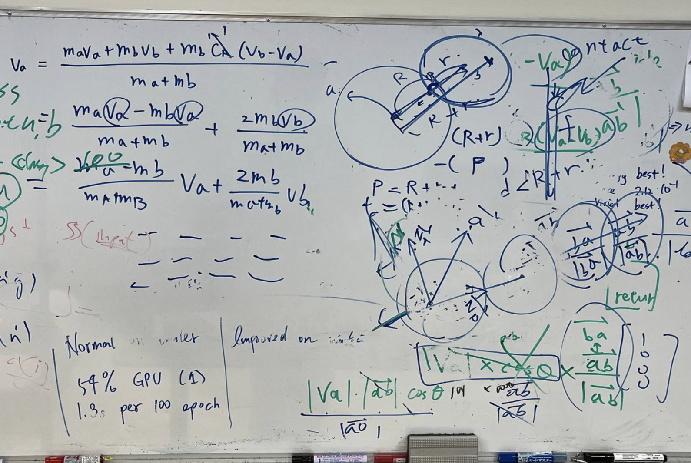

Particle System
Particle systems are collections of small images that when viewed together form a more complex “fuzzy” object, such as fire, smoke, weather, or fireworks. These complex effects are controlled by specifying the behavior of individual particles using properties such as initial position, velocity, and lifespan.
Introduction
It is mainly about how to use basic physics knowledge to implement a simple collision simulation with C++ programming. Besides, we also implemented four different types of integrators and discussed the consequences of using these different integrators. It’s special that this is my first time programming animation simulation, however, everything is quite cool for me. Although I faced some challenges during the writing process, I overcame a lot of parts that took a long time to debug. To sum up, I think that it’s an interesting implementation and I finished it smoothly.
Fundamentals
Before I started programming, I had to study and review some slides the professor taught in the class. First, I need to know the fundamental knowledge, such as the derivation of the ODE formula, object collision, motion of spring and particle system. Only when I understood the framework of the whole project, can I releazed what should I do in this homework.
Implementation First Part - Construct the connection of springs
The first part is building the springs. There are three types of springs, Structural, Shear and bending. TAs have given us an example and I just follow the example to program.
structural
shear
bend
As the picture show, the horizontal structural spring is using the left point to connect its right-side point, and when the column index is particlePerlength - 1, stopping connecting the point because there didn’t exist any point on its right side. And the horizontal structural spring is similar to the horizontal structural spring, but its direction is different.
Shear Spring has two different direction of spring, upper-left to lower-right and upper-right to lower-left. Point connects its lower-right point and when the column index is particlePerlength - 1, stopping connecting the point. And the other one is connecting to lower-left point and stopping connecting when the row index is particlePerlength -1.
It is similar to structural springs, the special part that is different from the structural spring is the length of spring. Its length doubles the distance of structural and crosses between the two points.
Implementation Second Part - Compute spring and damper forces
This part can be easily done because we can reference the slides on the course. I just follow the formula on the slides and implement them and divide the implementation into six parts.

Step 1 - Read the start and end index
Step 2 - Calculated the spring force
Step 4 - Calculated the acceleration by combining the spring force and damper force
Step 5 - Repeat the Step 1 to Step 4 for the other object
Step 6 - Update the acceleration and velocity
Using the data structure of spring to get the index of start and the end. Next, we can use the index to acquire other data of the spring.
alculated the n-ary forces and I focused on spring forces calculation and just followed the formula on the course slides and programing the matrix operations in this step.
This step combines two forces we got in Step2 and Step 3. and compute the acceleration and velocity.
This step just follows Step 1 to Step 4 because the direction of forces is different on two objects.
Implementation Third Part - Handle Collision
In the beginning, I was quite confused about how to handle the collision because I think that if a ball collided with another one, it would not only produce the force. As the picture is shown on the whiteboard, I discussed with my friends how to calculate collision.
Collision between cloth and spheres:
- Step 1 - Get the position between two objects and the length of objects.
- Step 2 - Detect whether the objects collide or not.
- Step 3 - Calculate the normal vector of two objects through formula.
- Step 4 - Use this collision formula to compute the acceleration.
- Step 5 - Update the current acceleration and position..
Implementation Forth Part - Integrator
I think this part is the most challenging part, you can not only follow the formula , but also need to design the correct p to get the correct data from the function.
Explicit Euler
Forward Kinematics
Forward kinematics gives the animator explicit control over each DOF but can become cumbersome when the animation is trying to attain a specific position or orientation of an element at the end of a hierarchical chain. IK, using the inverse or pseudoinverse of the Jacobian, allows the animator to concentrate only on the conditions at the end of such a chain but might produce undesirable configurations. Additional control expressions can be added to the pseudoinverse Jacobian solution to express a preference for solutions of a certain character.
Introduction
This is mainly about what is forward kinematics and basic knowledge of acclaim format. Implement a simple HumanModel with C++ programming. Besides, we also implemented the motion and discussed the concept of kinematics. It’s special that this is my first time programming body skeleton animation, however, everything is quite cool for me. Although I faced some challenges during the writing process, I overcame a lot of parts that took a long time to debug. To sum up, I think that it’s an interesting work and I finished it smoothly.
Fundamentals
I think this part is the most challenging part, you can not only follow the formula , but also need to design the correct p to get the correct data from the function.
In vestibulum massa quis arcu lobortis tempus. Nam pretium arcu in odio vulputate luctus. Suspendisse euismod lorem eget lacinia fringilla. Sed sed felis justo. Nunc sodales elit in laoreet aliquam. Nam gravida, nisl sit amet iaculis porttitor, risus nisi rutrum metus.
- Faucibus orci lobortis ac adipiscing integer.
- Col accumsan arcu mi aliquet placerat.
- Lobortis vestibulum ut magna tempor massa nascetur.
- Blandit massa non blandit tempor interdum.
- Lacinia mattis arcu nascetur lobortis.